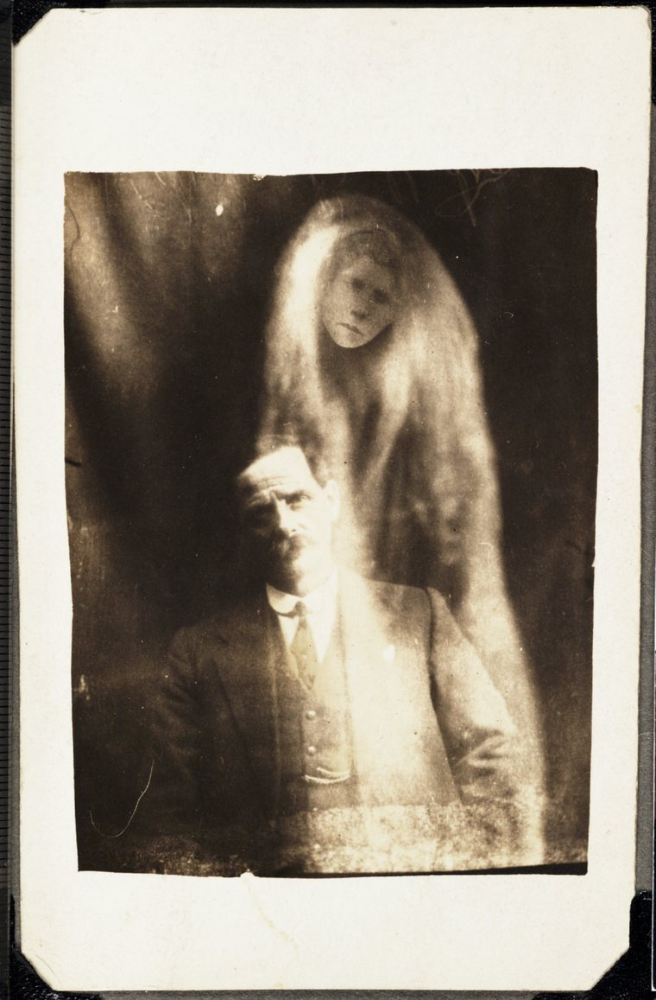
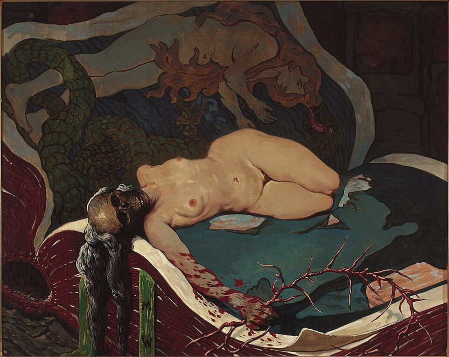
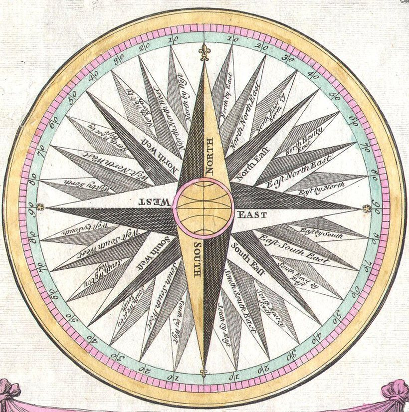

Москва · четвергВыпуск из Москвы и из-под землиЦена: бесплатно
TheSéance Times
газета для тех, кто разговаривает с прошлым
№ 009 · 5 ноября 2026Девятый выпускЧтение: 14 минут
Машина · главное
Талоны на токены
Bloomberg сообщил в среду: Apple снизила инженерам дневной лимит расходов на ИИ с 300 долларов до 200, а часть команд дойдёт до ста. За пределами инженерии обсуждают потолок в 25 долларов в день. В тот же день Qualcomm, теряя около пятой части продаж смартфонов, объявила, что станет поставщиком дата-центров. Бесплатный ИИ для сотрудников заканчивается — не запретом, а строкой в бюджете.
События — 4 ноября 2026 · Bloomberg, TechCrunch, The Verge · 6 минут
Цифры, если их выписать столбиком, выглядят как тариф на электричество. В октябре Apple понизила дневной потолок расходов на ИИ для инженерных команд с 300 долларов до 200 на команду, пишет Bloomberg со ссылкой на источники. Дальше — больше: по данным того же издания, часть лимитов готовят к снижению до 100 долларов в день, а для подразделений вне инженерии обсуждают дневной потолок в 25 долларов. TechCrunch обратился в Apple за комментарием; компания не ответила.
Контекст важнее самих цифр. Ещё в начале года по индустрии шла волна того, что в английском языке уже называют словом tokenmaxxing: сотрудникам велели пользоваться ИИ как можно больше — ради прироста эффективности, который описывали наречием «значительно», не уточняя, в чём его измерять. Волна оказалась короткой. Пришли счета, и компании обнаружили, что жёсткая экономия на людях и щедрость на токены плохо сочетаются в одной строке бюджета.
Норма выдачи, 1944 год: учётный корешок нормирования пробега (OPA Form R-534) на автомобиль Plymouth 1941 года, выданный 29 октября 1944-го в Аллентауне, Пенсильвания. Внизу — призыв времени: «Помогите убить чёрный рынок!» Ровно так же теперь выдают токены: по талону, с подписью и с просьбой не перепродавать. Общественное достояние, Wikimedia Commons.
Вторая половина того же сюжета — про Qualcomm. На отчётной конференции по итогам четвёртого квартала 2026 финансового года компания признала, что продажи смартфонов падают примерно на 20 процентов к 2025 году, и предъявила план: стать заметным игроком в ИИ-дата-центрах через партнёрства с Amazon и Meta, объявленные ранее. Ожидания по выручке от дата-центров: около 650 миллионов долларов в первом квартале 2027 года, пять миллиардов к концу 2027-го и пятнадцать миллиардов к 2029-му. В компании считают, что дата-центры в итоге дадут около 30 процентов бизнеса.
Для сравнения: AMD на своей отчётности говорит, что больше 80 процентов её выручки со временем будет приходиться на дата-центры. То есть Qualcomm идёт в тот же цех, но с другой исходной позицией: не из позиции силы, а из позиции падающего телефона. Это не оценка стратегии, а арифметика, которую компания сама назвала вслух.
Apple, лимитыС 300 до 200 долларов в день на инженерную команду (октябрь); часть лимитов — к 100; вне инженерии обсуждают 25 долларов в день.
Qualcomm, смартфоныПадение примерно на 20 процентов к 2025 году — по данным отчётной конференции.
Qualcomm, дата-центры650 млн долларов в I квартале 2027 года, 5 млрд к концу 2027-го, 15 млрд к 2029-му; около 30 процентов бизнеса в перспективе.
Кто ещёAMD ожидает свыше 80 процентов выручки от дата-центров; партнёрства Qualcomm — Amazon и Meta.
Чего нетКомментария Apple. Все цифры по лимитам — из Bloomberg со ссылкой на неназванные источники.
Что здесь факт, а что — обещание
Факт: сообщение Bloomberg о снижении лимитов с 300 до 200 долларов в октябре и о готовящихся 100 и 25 — с оговоркой, что это данные источников, а не заявление компании. Факт — сами прогнозы Qualcomm, названные на звонке: это публично взятые обязательства, их можно будет сверить через год. Факт и падение продаж смартфонов на 20 процентов.
Не факт: что Apple разочаровалась в ИИ. Урезание лимита означает ровно одно: расход стал заметным. Не факт: что 650 миллионов в первом квартале 2027 года превратятся в пять миллиардов к концу года — это прогноз, а не выручка, и такие прогнозы в чипах сбываются примерно так же часто, как обещания сроков. Чего нет: ни одной цифры о том, сколько Apple тратила на ИИ в абсолюте, — а без неё нельзя понять, сто долларов в день это много или мало.
Дневной лимит — самый честный прайс на ИИ: он показывает, сколько компания готова платить за токен, когда платит из своего кармана.
Редакционный вывод
Практический смысл для того, кто платит за токены сам и не имеет бюджета на отдел. Первое: считать не цену токена, а цену готового артефакта — переведённой главы, собранного номера, проверенного расчёта. Токен дешёвый, а вот три подхода к одной задаче уже нет. Второе: держать в конфиге две модели — дешёвую для рутины и дорогую для того места, где модель действительно решает, а не переписывает. Третье: кэш важнее скидки. Когда из двадцати двух тысяч входных токенов двадцать два идут по цене кэша, экономия получается не процентами, а разом. Четвёртое: логировать расход по задачам хотя бы раз в неделю — иначе через месяц вы будете спорить с самим собой без протокола.
И самое интересное в этой паре новостей — не цифры, а направление. Вчера корпорации мерили прогресс числом сожжённых токенов; сегодня они мерят его числом сэкономленных. Для рынка, который два года рос на обещании, что вычисления будут только дешеветь, это первый признак взросления: не «сколько мы можем», а «сколько мы готовы». Норма выдачи, как в сорок четвёртом, всегда говорит о человеке больше, чем его возможности.
Книги
Второй материал · 5 минут
Роман, который писали двадцать лет
Чайна Мьевиль получил Goldsmiths Prize за «The Rouse» — 1264 страницы, двадцать лет работы и сюжет о том, как британское государство тайно интересовалось паранормальным. Самый длинный лауреат за всю историю премии, вручённой в среду в Лондоне.
Событие — 4 ноября 2026 · Goldsmiths Prize, The Guardian, Literary Hub · 5 минут

Свидетель, которого не было: спиритическая фотография Уильяма Хоупа из Круга Крю, 1920-е. Хоуп снимал скорбящих и «допечатывал» к ним умерших — двойной экспозицией и заранее засвеченными пластинами. Разоблачили его коллеги-фотографы, но клиенты продолжали приходить: им нужен был не снимок, а доказательство. Общественное достояние, Wikimedia Commons.
Премия Goldsmiths, учреждённая в 2013 году «за прозу, которая ломает форму или расширяет возможности романа», в этом году досталась книге, которую издательство Pan Macmillan выпустило ценой в 35 фунтов и объёмом в 1264 страницы. Мьевиль писал её двадцать лет и в интервью New Statesman назвал «определяющей книгой моей жизни, которую я писал почти всё взрослое время». Для премии, где обычно побеждают книги в двести-триста страниц, это рекорд: самый длинный лауреат за тринадцать лет.
Сюжет, если пересказать коротко, выглядит как разворот газетной полосы семидесятых. Действие открывается в Лондоне в 1973 году. Маур теряет сына Юэна: он умирает в армейских казармах, и смерть выглядит как самоубийство. Пока Маур ищет, что произошло на самом деле, она находит союзников среди других потерявших детей семей и журналиста — и постепенно выясняет, что британское государство питало тайный интерес к паранормальному. Параллельно идёт линия солдата, у которого есть собственный опыт столкновения со сверхъестественным.
Фрэнсис Спаффорд, председатель жюри и профессор Goldsmiths, сформулировал решение так: «При всей силе книг в шорт-листе, казалось правильным отдать премию той, которая по амбиции, смелому обращению с историей, языковому эксперименту и чистому масштабу взорвала ожидания сильнее всех». В жюри были Кейт Бриггс, Хари Кунзру, Дэвид Секстон и Спаффорд; приз — десять тысяч фунтов.
Книга«The Rouse», China Miéville; Pan Macmillan, 1264 страницы, 35 фунтов; в списке премии — Picador.
РаботаДвадцать лет письма; автор называет её «определяющей книгой моей жизни» (New Statesman).
СюжетЛондон, 1973; Маур расследует смерть сына Юэна в казармах и находит след государственного интереса к паранормальному.
ПремияGoldsmiths Prize, с 2013 года, 10 000 фунтов, совместно с New Statesman.
Почему это важно не только для литературных страниц. Мьевиль — автор «Вокзала потерянных снов» и «Города и города», то есть человек, который двадцать лет доказывал, что фантастическое может быть умным. Здесь он сделал ход, который в самиздате обсуждают шёпотом: взял масштаб как аргумент. Не «я написал хорошо», а «я написал столько, что вы не сможете это игнорировать». Жюри, награждая книгу за «чистый масштаб», подтвердило, что приём работает — но только когда за масштабом стоит двадцать лет, а не двадцать запросов к модели.
Сеанс
Архив · 4 ноября
Язычество, выкопанное из кургана
The Public Domain Review · 4 ноября 2026
The Public Domain Review выложил собрание Мариана Вавженецкого — польского художника, который начинал как академический исторический живописец в Кракове, а кончил тем, что рисовал неоязыческие обряды в цветах школьного учебника. Между этими двумя состояниями была лопата: Вавженецкий всерьёз занимался археологией, нашёл на польских землях первые обсидиановые орудия, ранние земляные жилища, керамику и стелы. Картина «Раскопанный курган» (1891–1892) — одно из самых ранних изображений археологических раскопок в европейской живописи, и написана она по канону исторической картины: только вместо идеальной сцены из прошлого там показан разрыв между теми, кто копает, и обломками, которые им отвечают.

«Старая правда лежит в книгах», 1910: тело с черепом вместо лица на раскрытом томе, ветка в крови, вокруг — женщины в орнаментах модерна. Национальный музей в Варшаве. Общественное достояние, Wikimedia Commons.
Что этоСобрание неоязыческих работ 1891–1923 годов: «Раскопанный курган», «Старая правда лежит в книгах» (1910), «Укрощённая» (около 1910), «Вавельский дракон» (1912).
МетодАрхеология как источник образов: обсидиановые орудия, жилища, керамика, стелы — и убеждение, что языческая предыстория и есть подлинная суть народа.
ПриёмЖенские обнажённые фигуры, привязанные к дереву или растянутые между столбами, и василиск рядом — навязчивый мотив поздних листов.
РеакцияЕщё при жизни художника обвиняли в том, что это лубок и эротика; автор возражал, что пишет аллегории.
Для газеты о разговорах с прошлым здесь важна не эстетика, а механика. Вавженецкий не выдумывал язычество из головы — он его раскапывал, а потом дорисовывал то, чего в яме не было. Это ровно та операция, которой занимается любой исторический роман: сначала документ, потом воображение, и честность определяется тем, признаёшь ли ты, где кончился первый и начался второй. У него не признавал — и потому его картины читаются сегодня как очень точный портрет человека, который нашёл в земле слишком много и не удержался.
Физика
Материя · 4 ноября
Третий магнетизм
ScienceDaily · 4 ноября 2026
Почти девяносто лет физики делили магнитные материалы на два класса: ферромагнетики, у которых все спины смотрят в одну сторону и есть внешнее поле, и антиферромагнетики, где спины чередуются и гасят друг друга. Группа под руководством Национальной ускорительной лаборатории SLAC в работе, опубликованной в Science, предъявила экспериментальное подтверждение третьего класса — альтермагнетиков. Термин появился в 2022 году, а не хватало главного: прямого признака, который отличал бы настоящий альтермагнетизм от материала, который на него похож.
Признак нашли у теллурида марганца — вещества, которое десятилетиями числили обычным антиферромагнетиком. Ключ — хиральность: асимметрия магнитной структуры, работающая как винтовая лестница, закрученная в одну сторону. Специальные поляризованные рентгеновские лучи на линии ID32 Европейского центра синхротронного излучения дали разный отклик на две поляризации — именно такую картину и должен давать альтермагнетик, и никак не обычный антиферромагнетик.

Прибор, которому верили до теории: роза ветров с морского компаса, гравюра 1748 года. Магнетизмом пользовались четыре века, прежде чем смогли объяснить, что именно в нём работает. Альтермагнетизм проходит обратный путь — сначала теория, потом доказательство. Общественное достояние, Wikimedia Commons.
КтоSLAC, ведущий автор Дэниел Йост; эксперимент — на линии ID32 ESRF, участвовала Рэйчел Никель; финансирование — Управление науки Минэнерго США.
Почему это нужноСпинтроника: ферромагнетики слишком легко сбиваются внешним полем, антиферромагнетики «невидимы» и не дают спинового тока.
Что даётНулевую намагниченность (устойчивость) плюс поляризованный спиновый ток (возможность читать данные).
КудаПамять, квантовые устройства, менее прожорливые дата-центры — пока как перспектива, а не продукт.
ДальшеНаучиться управлять альтермагнитным состоянием светом и электричеством.
Забавная деталь: дата-центры, о которых идёт речь в главном материале, упираются не только в электричество, но и в физику памяти. Если спиновые устройства действительно съедят часть энергии на чтение и запись, выигрыш окажется не в цене чипа, а в счёте за киловатт. Обещаний тут пока больше, чем образцов, — но это редкий случай, когда фундаментальная статья и спор о бюджете на токены говорят об одном и том же.
Тело
Медицина · 4 ноября
Двенадцать аминокислот
Stanford Medicine · 4 ноября 2026
Стэнфордская группа под руководством Катрин Свенссон нашла в человеческом организме пептид, который снижает потребление еды почти вдвое — и нашла его не в лабораторной чашке, а в переборе генома алгоритмом. Программа Peptide Predictor прошла по примерно двадцати тысячам генов, отобрала 373 белка-предшественника, оценила, что из них может получиться 2683 пептида, и сузила список до ста кандидатов для проверки на нервных клетках. Один из них, нигде ранее не описанный, оказался сильнее GLP-1: активность нейронов выросла в десять раз против трёх у глюкагоноподобного пептида-1.
Молекулу назвали BRP — от белка BRINP2, из которого она вырезается; в ней всего двенадцать аминокислот. Дальше — животные. У худых мышей и мини-пигов (у них обмен ближе к человеческому) после внутримышечной инъекции потребление еды в следующий час падало до половины от ожидаемого. У мышей с ожирением за четырнадцать дней ежедневных инъекций вес упал в среднем на три грамма, тогда как контрольная группа прибавила примерно столько же; почти вся потеря пришлась на жир, а не на мышцы. Толерантность к глюкозе и инсулину тоже улучшилась.
ПубликацияNature; старший автор — Катрин Свенссон, ведущий исследователь — Летиция Коассоло, Stanford Medicine.
ЭффектПотребление еды до −50 процентов в первый час; у мышей с ожирением −3 грамма за 14 дней против +3 у контроля.
Отличие от OzempicРаботает, по данным авторов, в гипоталамусе, а не по всему телу: рецепторы GLP-1 есть и в кишечнике, и в поджелудочной.
ОсторожноПобочные эффекты у людей не проверены; Свенссон уже основала компанию для продвижения молекулы к клинике.
И честная оговорка, которую в пересказах теряют: у животных не изменились ни движение, ни потребление воды, ни тревожное поведение, ни стул — а именно запор и тошноту называют главными причинами, по которым люди бросают семаглутид. Это не значит, что у людей будет так же: мыши не умеют жаловаться на тошноту, а мини-пиги не заполняют опросники. Но если механизм действительно локальный, у гипоталамуса есть шанс стать точкой входа вместо всего организма.
Небо
Авиация · 4 ноября
Самолёт, который пересобирают
NASA · 4 ноября 2026
NASA показала X-70 Fractal — пилотируемый исследовательский самолёт, который в среду представили на саммите UP.Summit в Космическом центре Кеннеди. Главное в нём не скорость, а модульность: быстросменная система управления полётом и до 900 килограммов (2000 фунтов) экспериментальной полезной нагрузки внутри и снаружи. Взлётный вес — около 4,5 тонны, крейсерская скорость — 0,75 Маха, потолок — 13 700 метров, дальность — около 2780 километров (1500 морских миль). Первый полёт под флагом агентства обещают в течение двух лет.
«X-70 Fractal даёт NASA пилотируемую высокоэффективную платформу, чтобы испытывать перспективные системы управления, манёвренность и другие технологии в реальном полёте, — сказал администратор агентства Джаред Айзекман. — Модульная конструкция и возможность быстро менять полезную нагрузку позволят командам летать, учиться и переходить от эксперимента к эксперименту без долгих пауз». В родословной — X-1, впервые превысивший скорость звука в 1947 году, гиперзвуковой X-15 и нынешний тихий сверхзвуковой демонстратор X-59.
Практический интерес здесь один и он про сроки: исследовательский самолёт, который пересобирают за дни, а не за годы, — это ставка на скорость итерации, а не на рекорд. В отрасли, где один эксперимент в воздухе стоит как квартал работы лаборатории, экономика считается не в Махах, а в числе полётов на бюджет.
Тяжёлый звук
Кино · 4 ноября
Десять лет пустыни
Consequence · 4 ноября 2026
Документальный фильм «Desert Age» о пустынной сцене Калифорнии выходит в повторный прокат к десятилетию: премьера специальной версии — 7 ноября в Палм-Спрингс с сессией вопросов и ответов, онлайн-релиз — 20 ноября. В фильме — концертные съёмки и интервью с Джошем Хоммом, Дэйвом Гролом, Брантом Бьорком, Ником Оливери, Джесси Хьюзом, Марио Лалли, а также с Kyuss, Queens of the Stone Age, Fu Manchu, Eagles of Death Metal, Target 13, Mutual Hatred, Dead Issue и Across the River.
Сцена, у которой нет зала: пустыня Мохаве, плато Голд-Бьютт. Здесь репетировали в гаражах и играли на вечеринках в каньоне — генераторы, бочка пива и сорок человек публики. Фото: BLM, общественное достояние, Wikimedia Commons.
Что«Desert Age», полнометражный документальный фильм о пустынном роке; юбилейная версия — к десятилетию.
КогдаПремьера — 7 ноября 2026, Палм-Спрингс; онлайн — 20 ноября 2026.
Что новогоМатериал о легендарном концерте Black Flag в Палм-Спрингс в 1981 году: новые записи и фотографии.
Кто в кадреХомм, Грол, Бьорк, Оливери, Хьюз, Лалли; Kyuss, QOTSA, Fu Manchu, EODM.
Лучшая деталь — из авторского текста режиссёра: он несколько недель добивался Гэри Арса, гитариста Yawning Man, и в вечер того звонка умерла его бабушка. Он не сказал об этом в трубку — «не хватило духу, может быть, из-за шока, может быть, из стеснения, скорее всего, и того и другого вместе с нервами». Через десять лет он называет друзьями людей, с которыми познакомился на съёмках, и считает, что бабушка к этому приложила руку. Документальный фильм о музыке, которая выросла из пустоты, начинается с того же, с чего начинается любая пустота: с потери и с телефонного звонка, на который всё-таки ответили.